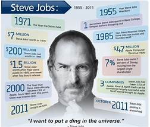

One of the last times I saw him, after I had finished writing most
of the book, I asked him again about his tendency to be rough
on people. "Look at the results," he replied. "These are all smart
people I work with, and any of them could get a top job at
another place if they were truly feeling brutalized. But they
don't." Then he paused for a few moments and said, almost
wistfully, "And we got some amazing things done." Indeed, he
and Apple had had a string of hits over the past dozen years
that was greater than that of any other innovative company in
modern times: iMac, iPod, iPod nano, iTunes Store, Apple Stores,
MacBook, iPhone, iPad, App Store, OS X Lion-not to mention
every Pixar film. And as he battled his final illness, Jobs was
surrounded by an intensely loyal cadre of colleagues who had
been inspired by him for years and a very loving wife, sister, and
four children.
